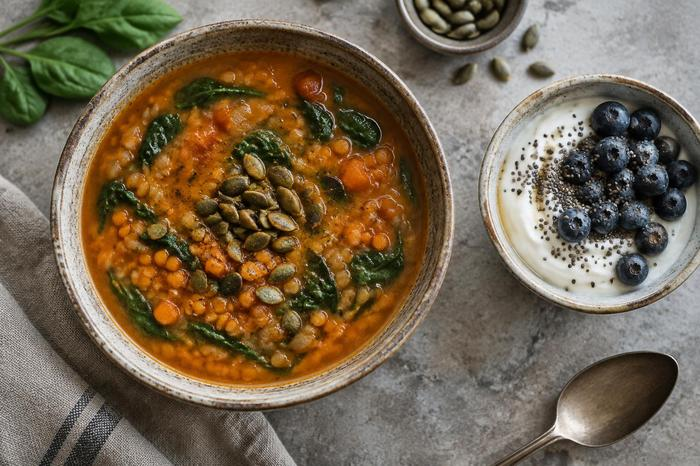

Realistic
Build routines that can last beyond a short-term diet.

Marissa Dankosky · MS, RDN
Practical, sustainable nutrition support grounded in clinical experience and shaped around the person.
Registered Dietitian Nutritionist · Westfield, New Jersey
About Marissa
Nutrition guidance is most useful when it fits real life—its routines, resources, health needs, and goals.
Marissa Dankosky, MS, RDN, is a registered dietitian based in New Jersey. Her background includes clinical nutrition in long-term care and rehabilitation, nutrition counseling in medical settings, and virtual dietitian work.
Her public work emphasizes empathy, cultural sensitivity, sustainable habits, and making nutrition support accessible.
Visit Marissa’s LinkedIn profile ↗Build routines that can last beyond a short-term diet.
Listen to each person’s health needs, preferences, and context.
Recognize affordability, food access, and everyday constraints.
Experience
Marissa’s background spans hands-on clinical care, bariatric support, and virtual nutrition counseling.
Provided medical nutrition therapy in nursing home and subacute rehabilitation settings, supporting residents as they worked toward their health goals.
Featured as a Foodsmart dietitian supporting members through remote nutrition counseling and practical, personalized care.
Her current LinkedIn profile is associated with Ilant Health, where recent activity reflects work around personalized obesity and cardiometabolic care.
Care approach
Marissa’s public comments and interviews return to practical, sustainable change and nutrition support that accounts for real circumstances.
Education & credentials
Marissa completed graduate nutrition and dietetics training with a supervised dietetic internship.
M.S. Nutrition and Dietetics, 2019–2021. The program included a dietetic internship with at least 1,200 supervised practice hours.
B.S. Nutrition and Dietetics, with a minor in Health and Wellness, 2015–2019.
RDN credential listed with Marissa’s current professional name.
Nutrition, without the extremes
In public conversations, Marissa has discussed sustainable weight management, metabolism, intermittent fasting, food affordability, and how nutrition fits into busy lives.
Follow on LinkedInTranslate nutrition science into choices that work in real routines.
Approach care with empathy, active listening, and cultural sensitivity.
Include health, habits, budget, access, and personal goals.

Community experience
Alongside clinical roles, Marissa has contributed to community nutrition education and meal delivery in New Jersey.
Media & conversations
Marissa has joined public discussions about sustainable eating, health, and habits.
Metabolism, fasting, food affordability, food security, and weight management.
Food choices, focus, consistency, and sustainable habits.
Clinical experience, virtual counseling, and making nutrition support more accessible.
Recent professional posts and nutrition conversations.
Community involvement
Volunteer experiences have connected Marissa with nutrition education, bariatric care, and community meal delivery.
Saint Elizabeth University
Designed and delivered an alumni project on nutrition myths and the science behind common claims.
New Jersey community service
Volunteered with Saint Francis Healthcare’s bariatric program and Mobile Meals of Westfield.
Connect
Visit Marissa’s professional profile for current work and updates.
Marissa Dankosky · MS, RDN
Follow Marissa’s professional work and nutrition conversations on LinkedIn.
View LinkedIn profileMarissa Dankosky on LinkedIn ↗Make your own palette
For clear contrast, pair a light page with dark text or a dark page with light text.